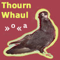

|
 Squeezed In Between Poetry
|
||
|
Following is a collection of poems in the genre of story telling. |
SQUEEZED IN BETWEEN POETRY
|
A Walk to Frame Sydney |
||||||||||||||||||||||||||||||||||||||
Immunised equilibrium riddled the porosity we face
all downhill now into a carrot grinding better health
The dealers indeed only ware bravado penguin suites
"Pick the best as any good book would tell you, Son"!
But the real book is buried past all distractions
It takes Dvorak guts and a staccato walk to frame
To find some answers in the late Goya walls
"Off you go, find your gay bar translator"
She went, leaving the soup kitchen behind
Found her book, but had no money left.
No one saw her and no one knew him
Till now!
Pumpernickel abused by Rosamunde
a sweet-talk worth a waitress
Everyone was smiling, enjoying
amber recall of ghost encounters
Disfiguring sex of the local priest,
politician, decant & moron
Minding their own business
imitated reads
Winding pastoral tick-tocks or
jail house torments in showers
Finding Art Deco placebo soup kitchens
Here, no translator is needed but creed
"All for one and all for a jazzy lip job".
The translator balances the dictaphone
marching to Bach in a 3 buy 3 rented opera house
And freedom is permanently parked outside of form
for a hobo sap walk saving up for book and cover.
Still, no one wins over Maharaja pigeon dreams
They keep on reminding those willing some read
"Relax, look over here, my books make the box
I'll give you one, but it will crash the nest".
| |||||||||||||||||||||||||||||||||||||||
SQUEEZED IN BETWEEN POETRY
|
Swamp Rejoiced Cricket Drum Noise |
||||||||||||||||||||||||||||||||||||||
In first voice suddenly it takes away the cabbage cricket sounds pitch of tear a chanson soft it trembles in its play just making a hiss silent drums of fear Never wished to have to fight As jewels when once drawn pull a sparkle to be matched Turn the gravel out be grown stand for life's worth's again Telling this, out go and fancy From afar recall don't refrain Brave in battle brave ardency of days past of no known pain Telling, brush away the swamps Dare go recall to sain sustain wishes thrown into hat of punts. The path was usual but what a finding of Solomon riches such unseen, untouched Weakness ever now passing to be blinding as if to mask protect the carriers might bringing spoils in skirtings patched. Voiceless sitting deep in foliage invisible witness, tired valiance Hidden behind fem growth of coilage watching the secret wild people dance Tribe brought some blessings in food I've waited for the end of the binge Watched for long, lost to horror glued near a shrine at the forest fringe. Agenda was about youth coming into age for these folk of both gender sacred what unfolded edged on outrage The lot sung, women's breasts swagged calling spirits scaring the encircled Dig, dig or we will never end, dig with your hands, and most did Till a bamboo bundle large unveiled an old body placed aside in silence Then cries slammed rhythm continued as the elders on rot eagerly peeled Youth was forced with urine to awake a body dry and dirty "don't be thrilled"! Most obliged but some for no sake just couldn't do it; 'til morn' brake. A generations cast to the alimony left out, eight girls and two lads Near the end of the ceremony left out, to face nightmare alidades One of the boys and all the girls succumbed finally to torment frills But desperate tribe men lifted spears as the last odd one wouldn't budge tips cut touching skin, just to smudge It would've been a terror gruesome end If a loud voice didn't break into echo The whole tribe into silence The whole tribe dropped to their knees. The forgotten dead body was now standing Risen and pointing making way to the boy A boy stubborn, shaking, holding tears rejecting reason of forced fait ploy. "He shall be the chosen one!" You are the next Shaman My Apprentice! He must marry the eight least girls The other boy will be his shadow enemy and friend, successor if failed his nature wisdom's challenge coil. For good or for worse let us rejoice, let them now be, let them serve This our God's wish, our voice against the evil peril perve" As the tribe left a weakness begun A bitten target of insect stung A body laying hiding from it all A body swarmed with reddish adore in flakes float of unnoticed spore Tried to scream, run out tall but to late, no voice, no accord poison melting start flesh to dung. Painful, illusive was the effort of a ghost crawling out of growth Thinking nothing, going forth fighting for survival for life's worth getting out, slow steady deport. Thankful reached the laid blessings took first drink on some sweet tea Days passed slow, getting better feeding on beetles half cooked pea. Such discovered by the rest of the expedition but trust lost at the moment lost even to amend For no sake of company No tale ambition, telling was a stashed giant diamond wrapped in a Shaman's headband. ... | |||||||||||||||||||||||||||||||||||||||
|
Copyright � Thourn Whaul all rights reserved. |
|||||||||||||||||||||||||||||||||||||||